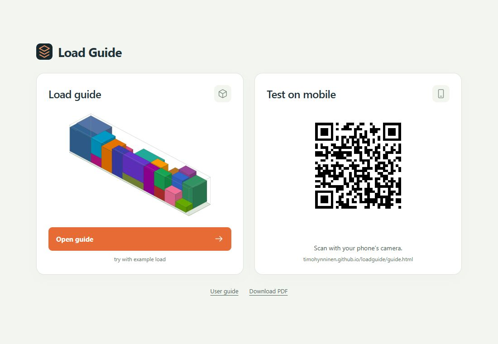
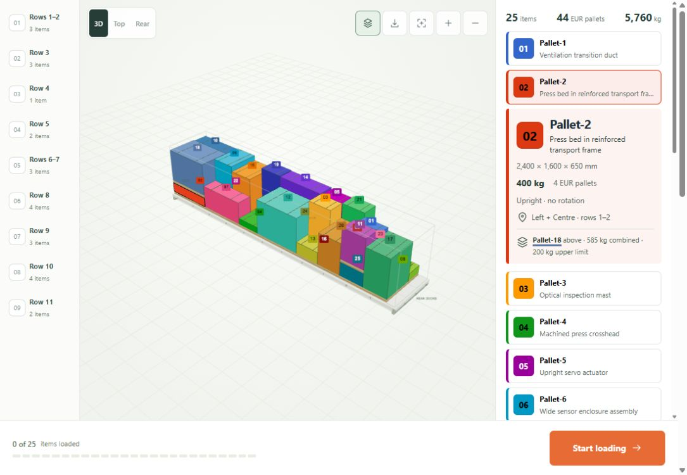
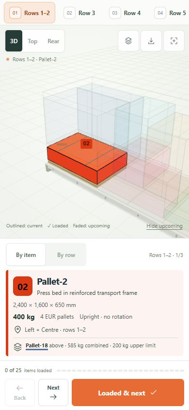
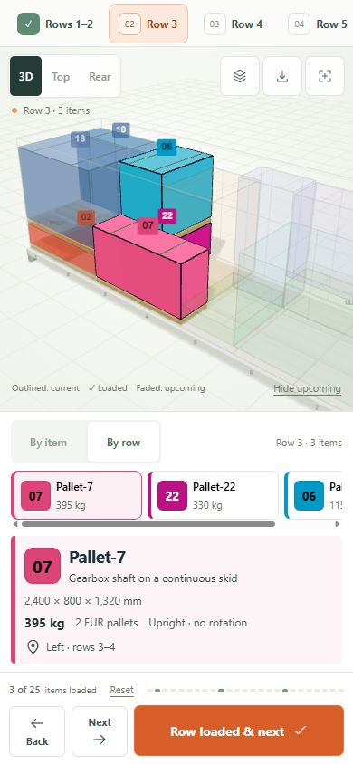

Load Guide: quick user guide
For use on a computer or phone. This version contains an example shipment.
1. Open the load
- Open timohynninen.github.io/loadguide in your web browser.
- Select Open guide on the left card. The full trailer load appears.
- To use your phone instead, open the phone’s camera and point it at the QR code on the right card. Tap the link that appears. It opens the load guide directly.

No account or installation is needed. The QR code opens https://timohynninen.github.io/loadguide/guide.html.
2. Inspect an item
- Select an item in the 3D trailer or select its numbered card in the item list.
- Check the item number, dimensions, gross weight, position and any named stacking partner. The colour on the item matches its card.
- Select the same card again to close its details.

Dimensions and gross weights include the pallets and packaging. One numbered assembly can occupy several EUR pallets.
Move the view
| Control | What it does |
|---|---|
| Mouse or finger | Drag to turn the 3D view. Use the mouse wheel, or pinch with two fingers on a phone, to zoom. |
| 3D / Top / Rear | Change the viewing direction. |
| Stacked-layers icon | Return to the full-load overview. Loading progress is kept. |
| Corner-brackets icon | Centre and fit the current row in the screen, or the whole trailer when in Overview. |
| Download-arrow icon | Download the Excel itinerary. |
3. Follow the loading sequence
- Select Start loading. If this browser already has saved progress, the button says Continue loading.
- Work from the front of the trailer toward the rear. The current item has a dark outline. Upcoming items are faded. The card gives the exact position and stacking partner.
- Use By item to work through individual assemblies. Use By row to see all items in the current loading stage.
- After loading the displayed item, select Loaded & next. In row mode, select Row loaded & next only after all items in that row are loaded.


| Button | Use it to |
|---|---|
| Back / Next | Review another item or row. These buttons do not mark anything as loaded. |
| Loaded & next | Record the current item as loaded and move to the next item. |
| Row loaded & next | Record every item in the displayed row as loaded and move to the next row. |
| Row buttons at the top or left | Jump to a particular row. Completed rows have a tick. |
Prepare named base-and-upper pairs as matched stacks before moving them into their assigned position. Left, centre and right are shown as viewed from the rear doors toward the front. Assemblies spanning several rows are shown once, where they begin.
4. Continue later or start again
The counter at the bottom shows how many items you have confirmed, for example 3 of 25 items loaded. Your progress is saved automatically in the same browser on the same device.
- When you return, select Continue loading to go to the next unconfirmed item.
- A different phone, computer or browser has its own progress. Confirmations are not shared between devices.
- For another practice run, select Reset and then Reset progress. Select Keep progress to cancel.
- At the end, 25 / 25 loaded means every item in the example has been confirmed.